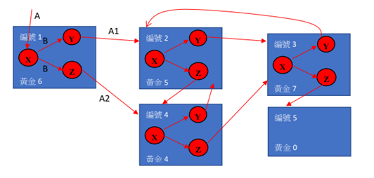

38. 山洞找黃金
小明獲得一個尋寶祕笈和一支鑰匙A，依此找到第一個山洞（如下圖編號 1），發現裡面有三個寶箱（X, Y, Z），而鑰匙A只能夠打開寶箱X，裡面裝著一些數量的黃金G1 和另一支鑰匙 B。而鑰匙 B 只能夠打開寶箱Y或寶箱Z的其中一個。
Y寶箱裡面裝有編號2山洞的寶箱X的鑰匙A1；Z寶箱裡面裝有編號4山洞的寶箱X的鑰匙A2。小明只能利用鑰匙 B 開啟寶箱Y 或寶箱 Z後往下一個山洞尋寶。

山洞有以下規則：
1. 山洞只有分空的山洞、或是有X、Y、Z三個寶箱的山洞。
2. 寶箱 X 藏有某數量的黃金和一把鑰匙B。鑰匙B只能開啟寶箱Y或寶箱 Z其中一個，開啟後鑰匙B即失效。
3.寶箱 Y、Z各藏有一把鑰匙 A1、A2，各可指引開啟下一個山洞的寶箱 X。下一個山洞可能是空的山洞或是已經走過的山洞，若是如此則尋寶之旅結束。
4. 空的山洞沒有黃金也沒有寶箱。
請寫一個程式找出可以獲得最多黃金的山洞編號順序的黃金數量。
【輸入說明】
第一行：輸入兩個整數，分別為山洞個數N（3<=N<=10），以及第一個進入的山洞編號K。
第2~N+1行：每行輸入四個整數，分別是山洞編號、黃金數量、下一個可以前往的兩個山洞編號
範例輸入說明：
5 1 （共5個山洞，由編號1進入）
1 6 2 4 （編號1的山洞，有6個黃金，可通到編號2、編號4的山洞）
2 5 3 4 （編號2的山洞，有5個黃金，可通到編號3、編號4的山洞）
3 7 2 5 （編號3的山洞，有7個黃金，可通到編號2、編號5的山洞）
4 4 2 3 （編號4的山洞，有4個黃金，可通到編號2、編號3的山洞）
5 0 0 0 （編號5的山洞，為一個空的山洞）
【輸出說明】
輸出從山洞編號K進入後，所能獲得的最多黃金數量。
範例輸出說明：
22 （共經過山洞1、2、4、3、5，共獲得6+5+7+4 = 22個黃金）
【測試資料一】
輸入：
6 1
1 6 2 4
2 5 3 4
3 7 2 5
4 4 2 5
5 0 0 0
6 9 1 3
輸出：
22
【測試資料二】
輸入：
4 5
5 3 6 7
6 3 5 7
7 6 5 6
8 0 0 0
輸出：
12
【測試資料三】
輸入：
10 1
1 9 5 6
2 3 1 3
3 8 4 7
4 0 0 0
5 5 6 9
6 7 5 8
7 1 1 8
8 10 3 10
9 0 0 0
10 3 2 8
輸出：
46
【測試資料四】
輸入：
7 2
2 3 4 6
3 4 4 8
4 1 6 8
5 7 2 6
6 5 5 7
7 7 6 8
8 2 3 7
輸出：
25
【隱藏測試資料一】
輸入：
6 1
1 4 2 3
2 6 3 4
3 8 2 5
4 5 2 3
5 0 0 0
6 2 4 5
輸出：
23
【隱藏測試資料二】
輸入：
3 4
3 2 4 5
4 5 3 5
5 0 0 0
輸出：
7
【隱藏測試資料三】
輸入：
10 1
1 2 6 4
2 3 6 3
3 6 4 5
4 8 5 9
5 2 7 10
6 4 5 7
7 1 4 9
8 10 1 2
9 5 8 10
10 0 0 0
輸出：
41
【隱藏測試資料四】
輸入：
6 5
1 3 4 5
2 4 4 5
3 2 5 6
4 3 1 5
5 6 4 6
6 3 3 5
輸出：
12